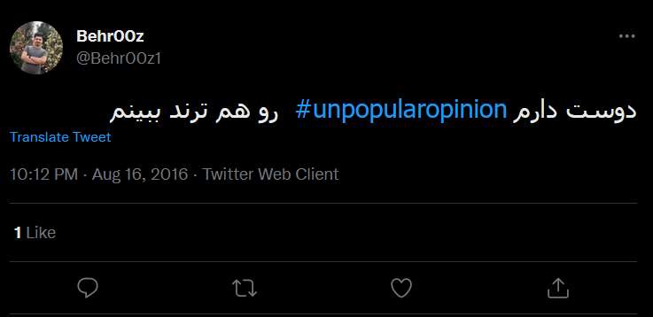
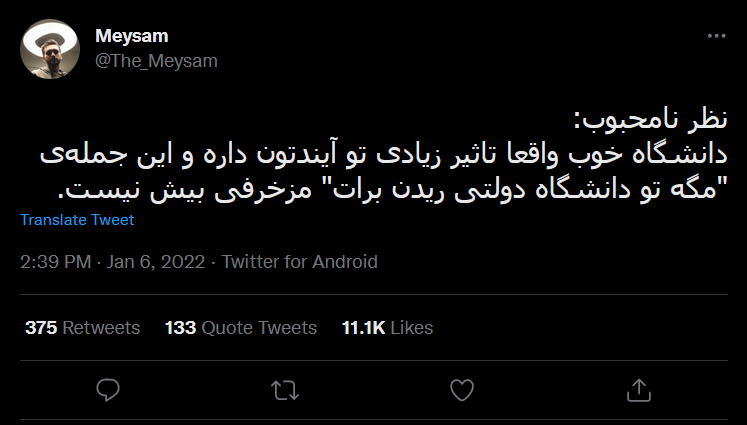
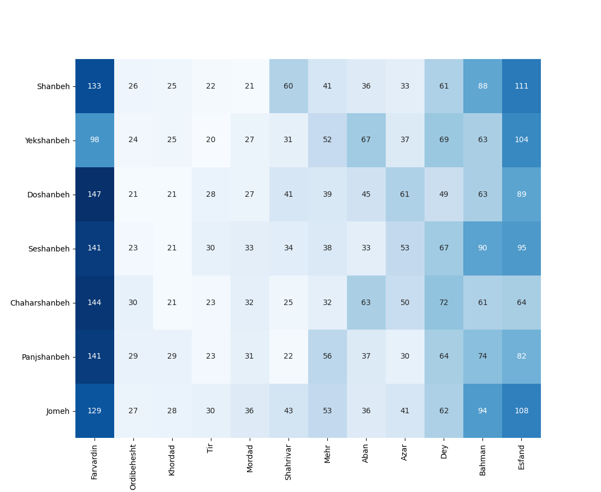
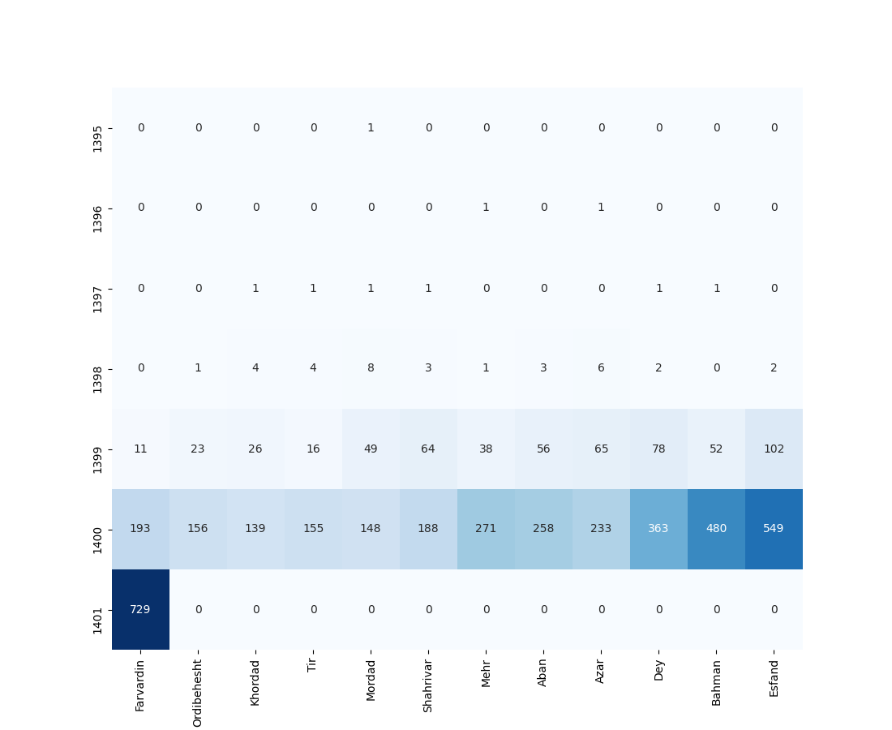
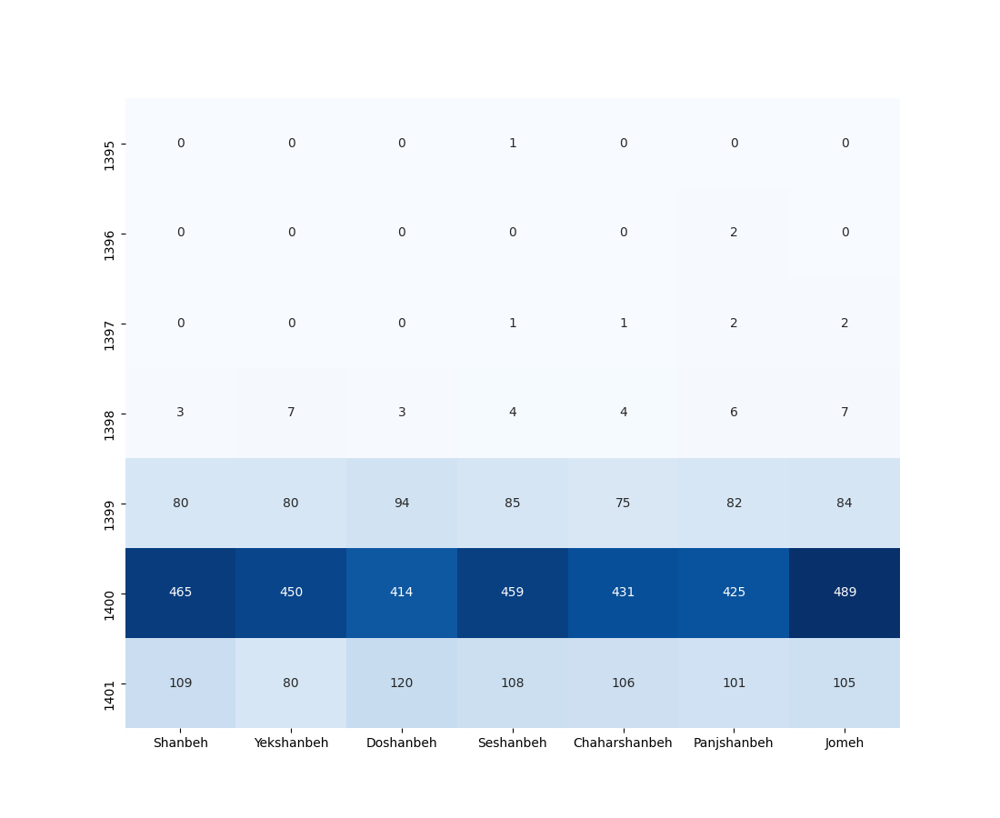
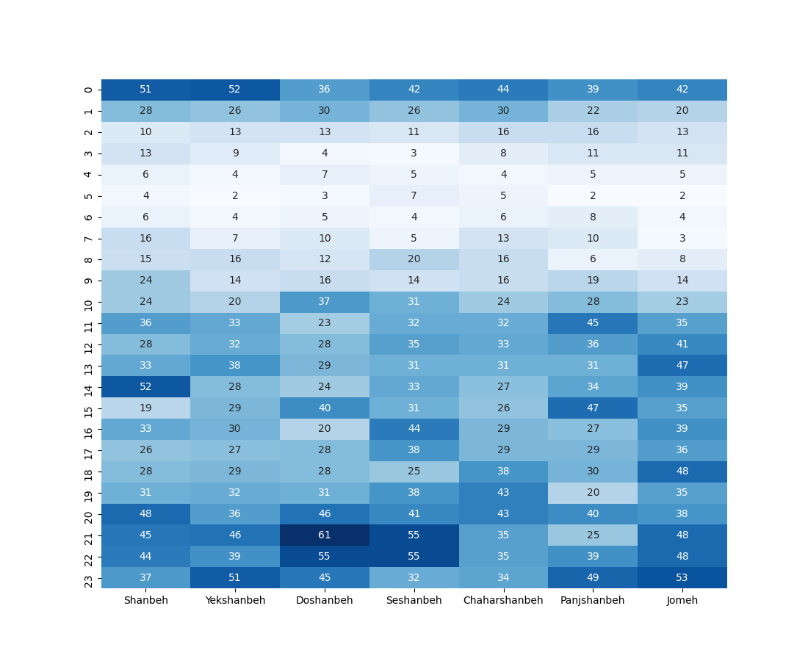

نظر نامحبوب (Unpopular Opinion) یک ژانر در توییتره که افراد نظرات خلاف عرف خودشون رو در قالب یک نظر نامحبوب بیان میکنند. البته نظرات نامحبوب فقط مختص توییتر نیست و در سایر شبکه های اجتماعی هم بیان میشه اما در توییتر معروف تره!نکته جالبی که در مورد نظرات نامحبوب وجود داره اینه که بعضیهاشون خیلی هم نامحبوب نیستند! هر از گاهی یه توییت به عنوان Unpopular Opinion میاد توی تایم لاینم که فیواستار شده که نشون میده خیلی هم نامحبوب نبوده! برای همین برام جالب بود که یک تحلیل آماری روی این مدل توییت ها انجام بدم تا ببینم اوضاع به چه صورتیه! برای استخراج توییت ها از این روش استفاده کردم. برای جستجو من کلمات زیر رو در توییتر جستجو کردم :-نظر نامحبوب -نظرنامحبوب -آنپاپیولار آپینین -انپاپیولار اپینین -نظر شاید نامحبوب -Unpopular Opinion UnpopularOpinionدیتای توییت ها رو هم در لینک زیر قرار دادم :
در مجموع ۴۴۸۵ توییت از تاریخ ۱۳۹۵/۰۵/۲۶ تا ۱۴۰۱/۰۱/۲۶ جمع آوری کردم که توسط ۳۱۴۷ نفر نوشته شده بودند. اولین توییت از این ژانر توییت زیره :

توییتی که بیشترین مقدار engagement (لایک+ریپلای+ریتوییت) رو گرفته توییت زیر بوده :

۵ نفر که بیشترین تعداد نظرات نامحبوب رو نوشتند عبارتند از :
مقابل یوزرنیم هر نفر تعداد توییت ها رو نوشتم. لیست کامل رو هم در لینک زیر قرار دادم :
حالا نظرات نامحبوب چه کسانی بیشترین مقدار engagement (لایک+ریپلای+ریتوییت) رو گرفته؟
لیست کامل رو در لینک زیر قرار دادم :
نمودار زیر نشون میده در هر ماه از سال و هر روز از هفته چه تعداد توییت نوشته شده :

نمودار زیر نشون میده در ماه های مختلف از سال های مختلف چه تعداد توییت نوشته شده :

نمودار زیر نشون میده در روز های مختلف هفته از سال های مختلف چه تعداد توییت نوشته شده :

نمودار زیر نشون میده در چه ساعاتی از شبانهروز و چه روز هایی از هفته چه تعداد توییت نوشته شده :

مقدار engagement توییت ها به صورت زیر است :-۹۲.۶ درصد کمتر از ۱۰۰ تا-۶.۲ درصد بین ۱۰۰ تا ۵۰۰ تا-۰.۴ درصد بین ۵۰۰ تا ۱۰۰۰ تا-۰.۴ درصد بین ۱۰۰۰ تا ۳۰۰۰ تا-۰.۳ درصد بیشتر از ۳۰۰۰ تا
nb.neighbours()
| title | date | |
|---|---|---|
| prev | رادیوگیک زیر ذرهبین! | ۱۴۰۱/۰۱ |
| next | باندهای بازیگری در ۲۵۰ فیلم برتر IMDb | ۱۴۰۱/۰۲ |